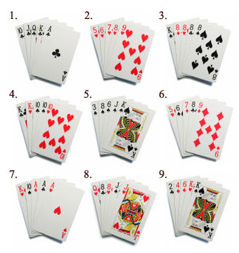

Tournament Rules
Every Wednesday Night Starting At 8:45pm
- Each week the buy in will be $10.
$5 goes into the pot for that nights winners and $5 goes into the final table pot.
- Re-buys are $5 for ½ the chips and continue until the conclusion of blinds being 400/800.
All re-buy money goes into that nights pot.
- Chip count starts at 7,000 each night and re-buys are worth 3,500 chips.
- 1st and 2nd place win money.
- Point are tallied weekly based on the number of players and
what place you come in that week.
Points Outline
- 1st place gets 9 points for each person who attended that night.
- 2nd place gets 8 points per person.
- 3rd place gets 7 points per person.
- 4th place gets 6 points per person.
- 5th place gets 5 points per person.
- 6th place gets 4 points per person.
- 7th place gets 3 points per person.
- 8th place gets 2 points per person.
- 9th place gets 1 point per person.
- Everyone receives 10 points each week for attending.
- Having enough points secures your chair at the final table.
Final Table
- Final tournament table is played on the 9th week or the week after last tournament game.
- There is an additional $10 buy-in to the final table so each player ends up with $50 in the pot.
- 1st, 2nd and 3rd places win money at the final table.
So, are you in?
Poker Hand Ranking

- Royal Flush – A straight from a ten to an ace with all five cards of the same suit. In poker all suits are ranked equally.
- Straight Flush – Any straight with all five cards of the same suit.
- Four of a Kind – Any four cards of the same rank.
- Full House – Any three cards of the same rank together with any two cards of the same rank.
- Flush – Any five nonconsecutive cards of the same suit. The highest card of the five determines the rank of the flush.
- Straight – Any five consecutive cards of different suits. Aces can count as either a high or a low card.
- Three of a Kind – Any three cards of the same rank.
- Two Pair – Any two cards of the same rank together with another two cards of the same rank.
- One Pair – Any two cards of the same rank.
- High Card
Basic Terminology
- Blinds: Short for “blind bets,” these are the forced bets made before the cards are dealt.
In Hold’em, blinds take the place of the classic “ante.”
- Burn Card: The card dealt facedown before any community card is dealt.
- Check: Similar to a call, but no money is bet. If there is no raise preflop, the big blind may check.
- Preflop: Anything that occurs before the flop is dealt is preflop.
- Flop: The first three community cards dealt.
- Turn: The fourth community card dealt; also known as fourth street.
- River: The final community card dealt; also known as fifth street.
- Showdown: When players reveal their hands to discover the pot’s winner.
- Kicker: Refers to a tie-breaking card.
- Heads-Up: One on one play, usually the final two at the end of a tournament.
- Option: The big blind’s choice whether to raise/check.
- Bubble: The period just before the paid places begin.